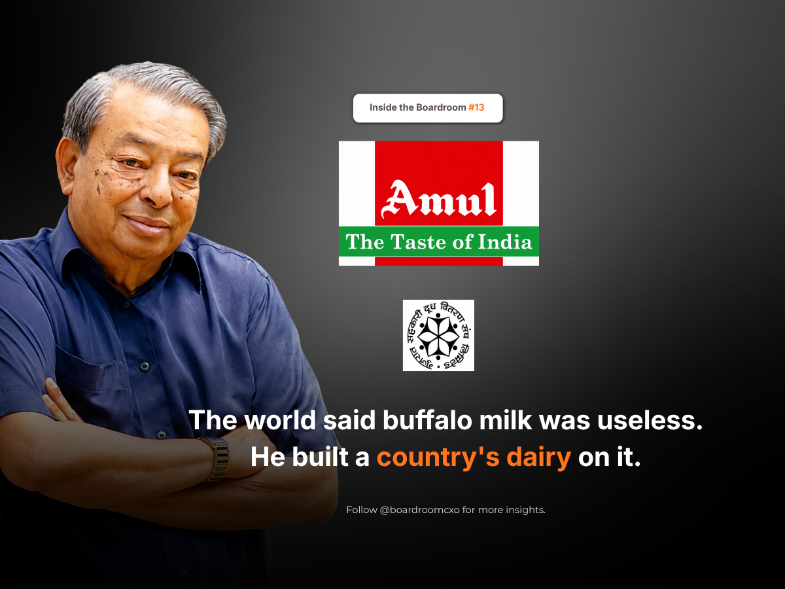

A 27-year-old engineer got off a train at Anand and started counting the days until he could leave.
India had been free for twenty-one months. Verghese Kurien had studied dairy engineering in America on a government bond, and was sent to a small creamery in Gujarat to work it off. He did not like milk. He knew nothing about dairy.
His release came at the end of 1949. He packed. Then a farmer asked him to stay.
India Did Not Have a Milk Problem
He stayed, and saw how the farmers were treated. The country was free. The men who milked the buffaloes still had no say in what their milk was worth. A private dairy controlled procurement in the district, set the price, and took the margin. Independence had changed who ran the government. It had not changed who owned the cow.
Kurien's read on the situation was not a technical one. India did not have a milk problem. It had an ownership problem. Most engineers sent to fix a creamery would have fixed the machines and caught the next train home. Kurien stayed fifty years.
The Bet: Give the Business to the People Who Do the Work
The fix he backed was structural, not operational. Instead of a company that bought milk from farmers and sold it downstream, keeping the margin for itself and the middlemen, the farmers of Kaira district built a co-operative that they owned outright, from procurement through processing. Kurien put his engineering training behind that structure rather than behind a single product or plant.
In 1955, that structure needed a technical breakthrough to scale. Spray-drying, the process used to turn liquid milk into powder, was believed to work only with cow's milk. Buffalo milk, the dominant milk source in the district, was considered too high in fat for the process. Kurien backed the experiment anyway. The plant built at Anand that year became the world's first to spray-dry buffalo milk commercially.
It was not a product launch. It was proof that a farmer-owned co-operative could out-engineer the private dairies that had written it off.
That single technical fix is what made the ownership structure economically viable at scale. A co-operative that could not process its members' surplus milk into a shelf-stable product would have stayed a local arrangement. One that could, could grow into a national model.
Fifty Years, Not a Quarter
In 1965, Kurien was appointed founding chairman of the National Dairy Development Board and ran it for the next 33 years. His mandate was to take what had worked in one Gujarat district, farmer ownership backed by real processing capacity, and replicate it across India. The programme that carried this out, Operation Flood, is the reason India became the world's largest milk producer.
That is the part of the story most leadership retrospectives skip past: the multi-decade middle. It is easy to admire a founder's first bold call. It is harder to sustain the discipline of running the institution that call created for three decades, through changes in government, changes in technology, and the ordinary erosion that eventually captures most co-operative structures back into someone else's hands. Kurien ran NDDB for 33 years. He did not treat the founding moment as the finish line.
What the Numbers Say Now
Amul is owned today by 3.6 million farmers through the Gujarat Co-operative Milk Marketing Federation. In April 2026, Amul crossed ₹1 lakh crore in turnover, the first Indian FMCG brand to do so, more than seventy years after a reluctant 27-year-old first stepped off a train at Anand.
The structure Kurien fought for in 1949, farmers owning the business rather than selling into it, is the same structure still distributing that turnover back to 3.6 million people instead of to a single promoter family or a set of outside shareholders.
The Boardroom Read
A country wins freedom on one date.
It earns independence the day the people who do the work finally own it. Kurien's real decision was made in 1949, before Amul existed and before there was any evidence the co-operative model would work at scale: to spend his career on who owned the outcome, not just on who ran the machines. Every structural choice that followed, the spray dryer, the NDDB chairmanship, Operation Flood, was downstream of that first refusal to leave. The lesson does not stay in dairy. Any leader inheriting a business built on someone else's labour faces the same fork Kurien faced at that train station: fix the operation and move on, or stay long enough to change who it actually belongs to.
Frequently Asked Questions
Who was Verghese Kurien?
Verghese Kurien was an Indian engineer sent to Anand, Gujarat in 1949 to work off a government bond after studying dairy engineering in the US. He stayed on to help local farmers build the co-operative that became Amul, later served as founding chairman of the National Dairy Development Board for 33 years, and is widely credited as the architect of India's White Revolution.
Why did Verghese Kurien almost leave Anand in 1949?
Kurien had studied in the US on a government bond and was assigned to a small creamery in Anand to work off the obligation. He disliked milk, knew nothing about dairy, and packed his bags at the end of 1949 planning to leave the moment his bond period ended. A local farmer asked him to stay and help set up a farmer-owned co-operative instead.
What problem did Kurien identify in Gujarat's dairy industry?
India had been independent for 21 months, but the farmers who milked their buffaloes still had no say in what their milk was worth; a private dairy controlled procurement and pricing. Kurien concluded the country's dairy sector did not have a milk problem, it had an ownership problem, and stayed on to help farmers build a co-operative they owned outright.
What was the world's first buffalo milk spray dryer, and why did it matter?
In 1955, Kurien backed an experiment at Anand to adapt spray-drying technology, until then considered workable only with cow's milk, to process buffalo milk into milk powder. It was the world's first commercial plant of its kind and gave the farmer co-operative a way to convert India's dominant milk type into a shelf-stable product, forming the economic base later scaled nationally as Operation Flood.
What was Kurien's role at the National Dairy Development Board?
Kurien was appointed founding chairman of the National Dairy Development Board in 1965 and ran it for 33 years. Under his leadership, the NDDB replicated the farmer-owned Anand pattern across India through Operation Flood, turning the country into the world's largest milk producer.
How big is Amul today, and who owns it?
Amul is owned by 3.6 million farmers through the Gujarat Co-operative Milk Marketing Federation. In April 2026, Amul crossed ₹1 lakh crore in turnover, the first Indian FMCG brand to do so, more than seventy years after Kurien first arrived at Anand's government creamery.
What is the leadership lesson from Verghese Kurien's fifty years at Anand?
Kurien treated ownership, not just output, as the problem worth solving. Rather than fixing the dairy's machinery and moving on, he spent five decades building an institution structurally owned by the people who did the work, a decision that outlasted him and now underwrites Amul's scale.
Related Reading
Sunil D'Souza Turned Down Tata's FMCG Job, Then Built It From Tea and Salt
Read → R · 02 Founder Leadership · August 2026Ramesh Chauhan Sold Thums Up to Build Bisleri From Scratch
Read → R · 03 Founder Leadership · August 2026C K Venkataraman: How Tanishq Fixed a Decade of Being Wrong About India
Read →Building an institution that has to outlast you, not just a quarter?
The leaders who can sit with an unglamorous problem for years, and structure a business so the people who create the value also own it, are rare. We place operators who think in decades, not just in the next campaign.
Brief Us on a Mandate